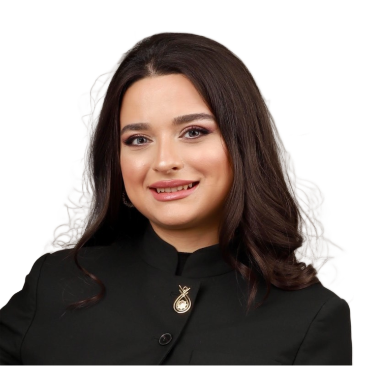

Building the future of education from Baku, Azerbaijan
Gunay Imanzade founded Metatesk to answer one question: what if students could enter the lesson instead of just watching it? Today, Metatesk's immersive VR and AI learning platform is deployed in schools and pursued by governments across the region.

Gunay Imanzade studied chemistry at Baku State University (2013–2017) before pursuing a master's degree at ETH Zurich — the Swiss Federal Institute of Technology — one of the world's top technical universities. After working at ETH Zurich in 2018 and spending time teaching in China, she returned to Azerbaijan with a clear conviction: that education needed to be rebuilt from the ground up.
In 2021, Gunay founded Metatesk — an immersive VR and AI education platform built for the way students actually learn. The platform combines virtual reality classrooms, AI teacher companions with four distinct personas, multiplayer sessions for up to 30 students, and an institutional-grade LMS capable of national-scale deployment.
Her work earned recognition across the globe: named to the Forbes 30 Under 30 Europe list, awarded the Presidential Youth Award for Innovation and Entrepreneurship, named Tech Entrepreneur of the Year by Azerbaijan's Innovation and Digital Development Agency (IDDA), and recognized as a 2x Teknofest winner. Metatesk has been backed by Google for Startups Silkway Accelerator, Microsoft for Startups, ABB, EBRD Star Venture, and Draper University.
Gunay's work has been recognized by some of the world's most prestigious institutions in technology, entrepreneurship, and education.
Named to Forbes' prestigious list of the most impactful young entrepreneurs and innovators across Europe.
Recipient of Azerbaijan's Presidential Youth Award for Innovation and Entrepreneurship — a national honor for exceptional young changemakers.
Named Tech Entrepreneur of the Year by Azerbaijan's Innovation and Digital Development Agency (IDDA Awards).
Two-time winner at Teknofest — Turkey's world-renowned technology and aviation festival, one of the largest tech competitions globally.
From a chemistry lab at Baku State University to Forbes 30 Under 30 Europe — Metatesk is the result of a decade of learning, building, and believing that education can be transformed.